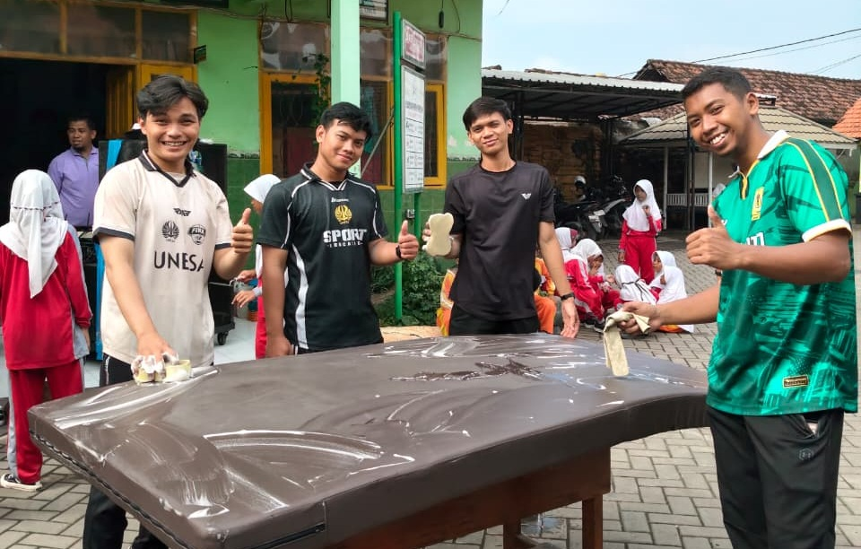

SDN Kebonagung 1 Sukodono menggelar kegiatan Giat Bersih Musholah dan Lingkungan Sekolah dalam rangka menyambut datangnya bulan suci Ramadhan. Kegiatan ini menjadi momentum berharga untuk mempersiapkan tempat ibadah dan lingkungan yang bersih, nyaman, dan kondusif.
Kegiatan Giat Bersih yang dilaksanakan pada Kamis, 12 Februari 2026 ini merupakan wujud nyata komitmen sekolah dalam menjaga kebersihan dan kerapihan lingkungan pendidikan. Musholah sebagai tempat ibadah yang sakral memerlukan perhatian khusus agar selalu terjaga dalam kondisi yang optimal. Dengan melibatkan seluruh warga sekolah, kegiatan ini tidak hanya bertujuan membersihkan secara fisik, tetapi juga membangun kesadaran kolektif tentang pentingnya kebersihan dan kedisiplinan sejak dini.

🤲 Pembukaan dengan Istigosah Doa Bersama
Kegiatan dimulai dengan memohon ridho dan berkah dari Allah SWT melalui acara Istigosah Doa Bersama. Seluruh peserta berkumpul di musholah dan bersama-sama melakukan doa dengan khusyuk. Dalam momen yang tenang dan penuh penghayatan ini, para siswa, guru, dan mahasiswa PPL berdoa semoga kegiatan bersih-bersih yang akan dilakukan mendapat berkah, berjalan lancar, dan dapat menjadi bagian dari persiapan spiritual menjelang bulan Ramadhan. Doa bersama ini juga menjadi penggugah kesadaran bahwa setiap tindakan mereka diawali dengan niat yang tulus untuk mendekatkan diri kepada Allah SWT.
🧹 Pelaksanaan Kerja Bakti Bersih-bersih

Setelah doa dan setelah para peserta merasa cukup menerima spiritualitas dari acara istigosah, kegiatan dilanjutkan dengan kerja bakti bersih-bersih musholah dan lingkungan sekolah. Pembagian tugas dilakukan secara sistematis dan terstruktur kepada seluruh peserta. Beberapa kelompok bertugas membersihkan area musholah dengan teliti dan profesional, mulai dari menyapu lantai hingga mengepel dengan warna-warna cerah agar musholah kembali bersinar. Mereka juga membersihkan semua peralatan ibadah seperti mukena, sarung, dan sajadah agar tetap dalam kondisi prima dan higienis untuk digunakan oleh semua pengguna musholah.
Kelompok lainnya dengan semangat yang sama fokus pada kebersihan lingkungan sekolah secara keseluruhan. Mereka membersihkan halaman sekolah, merapikan taman, membersihkan tempat sampah, dan merapikan area-area yang sering terabaikan. Dari sudut-sudut ruang kelas hingga deretan pohon di halaman sekolah, tidak ada satupun area yang luput dari perhatian mereka. Setiap peserta bekerja dengan penuh dedikasi, tanggung jawab, dan kepedulian, mencerminkan nilai-nilai gotong royong sejati yang menjadi jantung budaya Indonesia dan semangat Ramadhan.
Semangat yang ditampilkan seluruh peserta benar-benar luar biasa menginspirasi. Meskipun kegiatan ini memerlukan kerja fisik yang cukup berat, namun tidak ada satupun peserta yang menunjukkan kelelahan atau keluhan. Justru sebaliknya, terlihat antusiasme yang tinggi dan energi positif yang mengalir dalam setiap gerak dan tindakan mereka. Para siswa dengan penuh semangat menyelesaikan tugas mereka, saling membantu satu sama lain tanpa diminta, dan menciptakan suasana yang penuh kebersamaan dan kekeluargaan.

Kehadiran mahasiswa dari Universitas Negeri Surabaya (UNESA) yang sedang melaksanakan Praktik Pengalaman Lapangan (PPL) di sekolah ini menambah warna dan semangat dalam kegiatan. Mereka tidak hanya menjadi pengamat pasif, tetapi turut aktif berpartisipasi dalam setiap aspek kegiatan bersih-bersih. Mahasiswa ini membawa perspektif baru dan energi segar yang menular kepada semua peserta. Mereka juga membantu memandu dan mengorganisir teman-teman mereka, sehingga kegiatan berjalan lebih terstruktur dan efisien. Kolaborasi antara siswa, guru, dan mahasiswa ini menciptakan ekosistem pendidikan yang inklusif dan saling mendukung.
Waktu pelaksanaan yang dipilih tepat sebelum bulan Ramadhan memiliki makna yang sangat mendalam. Bulan Ramadhan adalah bulan penyucian jiwa, bulan untuk meningkatkan ketakwaan, dan momen istimewa untuk memperkuat hubungan dengan Tuhan. Mempersiapkan musholah dan lingkungan sekitar agar bersih dan nyaman adalah bentuk persiapan spiritual dan fisik yang sempurna. Dengan lingkungan yang bersih dan teratur, diharapkan proses ibadah di bulan suci Ramadhan akan berjalan lebih khusyuk, lebih tenang, dan lebih bermakna bagi seluruh umat muslim yang berada di lingkungan sekolah.
Semangat Gotong Royong
Bersih-bersih Musholah & Lingkungan Sekolah
Penuh Semangat
Seluruh peserta antusias
Gotong Royong
Kerja sama yang kompak
Kolaborasi
Mahasiswa UNESA turut serta
Partisipasi Mahasiswa UNESA
Kegiatan ini semakin meriah dengan keikutsertaan mahasiswa dari Universitas Negeri Surabaya (UNESA) yang kebetulan sedang melaksanakan kegiatan Praktik Pengalaman Lapangan (PPL) di SDN Kebonagung 1. Kehadiran mereka menambah semangat dan energi positif dalam kegiatan ini.
"Kami sangat bersyukur dan berterima kasih atas antusiasme seluruh peserta dalam kegiatan Giat Bersih ini. Semoga dengan musholah dan lingkungan yang bersih, kita semua dapat lebih khusyuk dalam menyambut dan menjalankan ibadah di bulan suci Ramadhan nanti."
Wilda Zarkasi, S.Pd
Koordinator Kegiatan